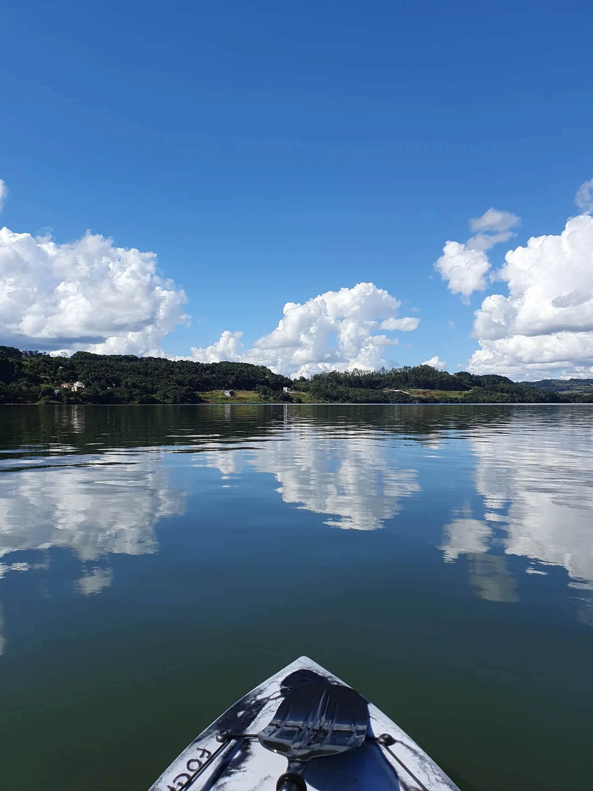
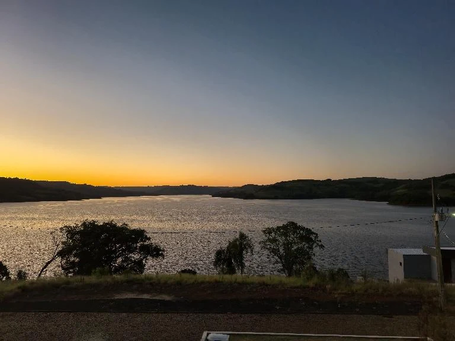
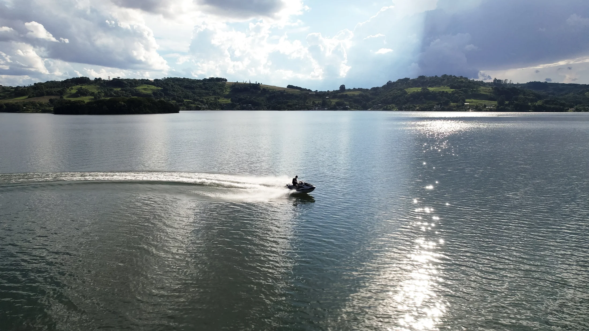
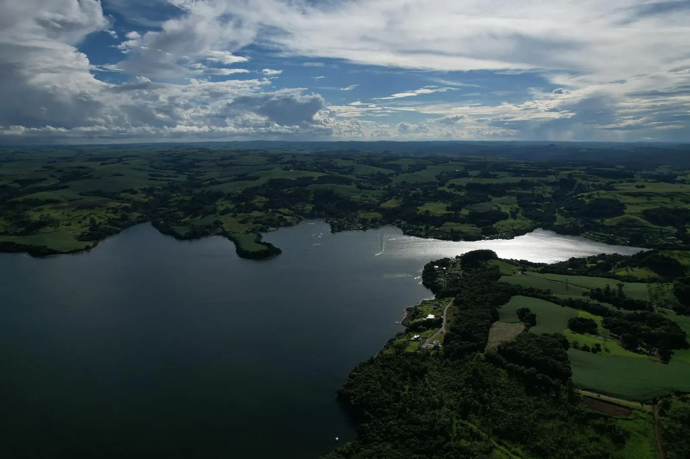
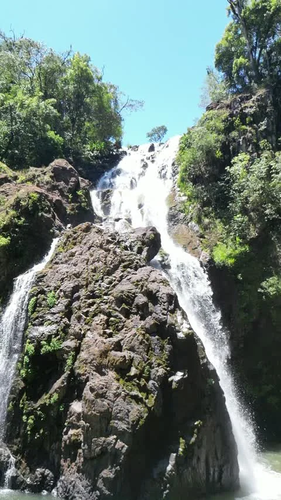

Segurança Jurídica
Matrículas individualizadas e conformidade legal total, prontas para imediata transferência e início de projeto.
Lago Lumini · Mangueirinha/PR
Terrenos amplos em um refúgio residencial junto ao Lago da Usina Salto Segredo, a aproximadamente 20 km de Mangueirinha.
01 — O lugar
O Lago Lumini não é apenas um endereço, é um refúgio criado para mentes que valorizam o silêncio, a amplitude e a conexão genuína com a natureza. Aqui, infraestrutura impecável e segurança jurídica absoluta se encontram.
Aqui, os dias seguem o ritmo das águas. Um cenário desenhado para finais de semana de desconexão, encontros memoráveis e o projeto de uma vida que merece ser emoldurada pelo extraordinário.
Conheça a experiência Lumini
02 — Diferenciais
O planejamento rigoroso que transforma espaço em um patrimônio de valor atemporal.
Matrículas individualizadas e conformidade legal total, prontas para imediata transferência e início de projeto.
Rede elétrica, internet por fibra, abastecimento e vias de acesso integrados de forma harmoniosa e prontos para uso.
Controle rigoroso de entradas e sistemas inteligentes de monitoramento para garantir serenidade ininterrupta.
Mata nativa e paisagens exuberantes integradas organicamente ao projeto, garantindo ar puro, privacidade visual e bem-estar contínuo.
Um espelho d'água privativo ideal para embarcações, esportes aquáticos e momentos inesquecíveis de contemplação ao pôr do sol em família e amigos.
A apenas 20 km de Mangueirinha pela PR-459. O equilíbrio perfeito entre o isolamento reservado da natureza e a conveniência de um rápido acesso.
03 — Experiência



Experiência imersiva
Uma viagem aérea pela integração perfeita entre a topografia dos lotes, o espelho d'água e a natureza envolvente.
Agendar visita privada04 — Lotes
Terrenos amplos, com lotes gerais a partir de 600 m² e opções destacadas no material comercial com mais de 1.000 m².
Terrenos amplos para projetos residenciais integrados à natureza.
Consultar disponibilidadeOpções de maior metragem para projetos que valorizam espaço e privacidade.
Consultar disponibilidadeImplantação privilegiada
Uma perspectiva integrada da topografia, do acesso privativo à água e da emolduração natural reservada a cada unidade.
05 — Garantia & Solidez
Desenvolvido para oferecer previsibilidade absoluta. Combinamos rigor jurídico, infraestrutura 100% entregue e facilidades de aquisição para que a sua única preocupação seja a arquitetura do seu refúgio no Rio Iguaçu.
Tirar dúvidas pelo WhatsAppMatrículas IndividualizadasRigor documental absoluto e matrículas prontas para imediata escrituração, garantindo transferência rápida e proteção patrimonial.
Flexibilidade de AquisiçãoCondições personalizadas de negociação direto com o proprietário e total suporte para integração com linhas de crédito de alto padrão.
Infraestrutura ConcluídaAbastecimento, rede elétrica, internet por fibra, rampa de uso comum e acessos consolidados. Tudo pronto para que as obras do seu projeto iniciem de imediato.
Privacidade & Controle de AcessoPortaria eletrônica e protocolos inteligentes de monitoramento criados para assegurar a sua serenidade e a de seus familiares.
06 — Localização
O Lago Lumini está no lago da Usina Salto Segredo, com acesso pela PR-459, no trecho Mangueirinha–Reserva do Iguaçu.
07 — Ao redor
O lago é protagonista, mas a região também aproxima o visitante de mata nativa, paisagens rurais e cachoeiras.

08 — Depoimento
Uma experiência contada por quem tem contato de perto com o Lago Lumini. Assista ao depoimento e conheça uma percepção real sobre o lugar, a paisagem e a atmosfera que fazem parte deste projeto.
Conversar pelo WhatsApp09 — Dúvidas frequentes
Para valores, disponibilidade e condições atualizadas, o atendimento segue diretamente pelo WhatsApp do empreendimento.
Enviar uma dúvidaO material comercial apresenta lotes a partir de 600 m², com áreas que chegam aproximadamente a 1.500 m². Entre os lotes destacados nesta demo há opções acima de 1.000 m².
Sim. A documentação fornecida pelo empreendimento informa lotes com escrituras e matrículas individualizadas.
O material informa água, energia elétrica e vias de acesso, além de acesso controlado ao loteamento.
Os materiais estratégicos informam possibilidade de financiamento bancário. As condições devem ser verificadas no atendimento comercial.
A comunicação oficial do Lago Lumini destaca aproximadamente 20 km até Mangueirinha/PR, com acesso pela PR-459.
O primeiro passo é falar com a nossa equipe no WhatsApp e agendar uma visita.
Conheça pessoalmente
Agende uma visita e descubra o Lago Lumini no seu próprio ritmo.
Agendar visita pelo WhatsApp